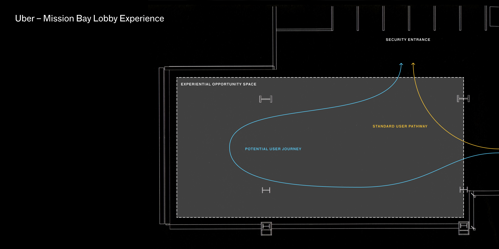
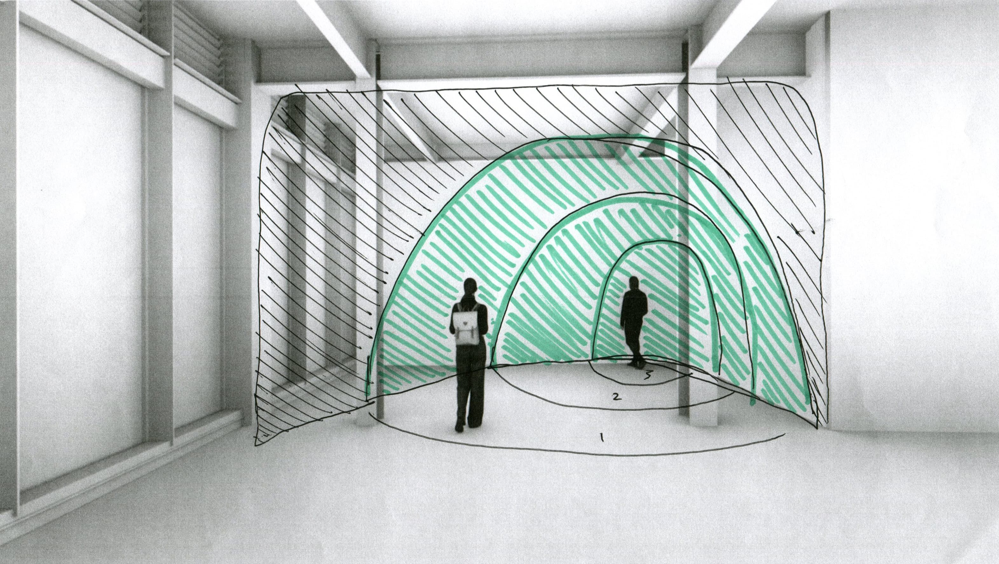
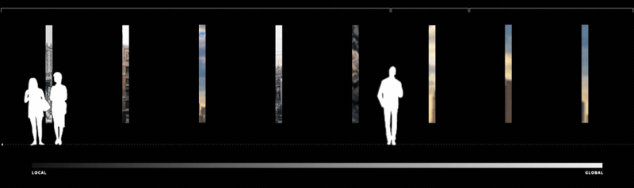
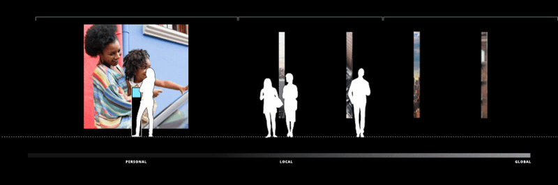
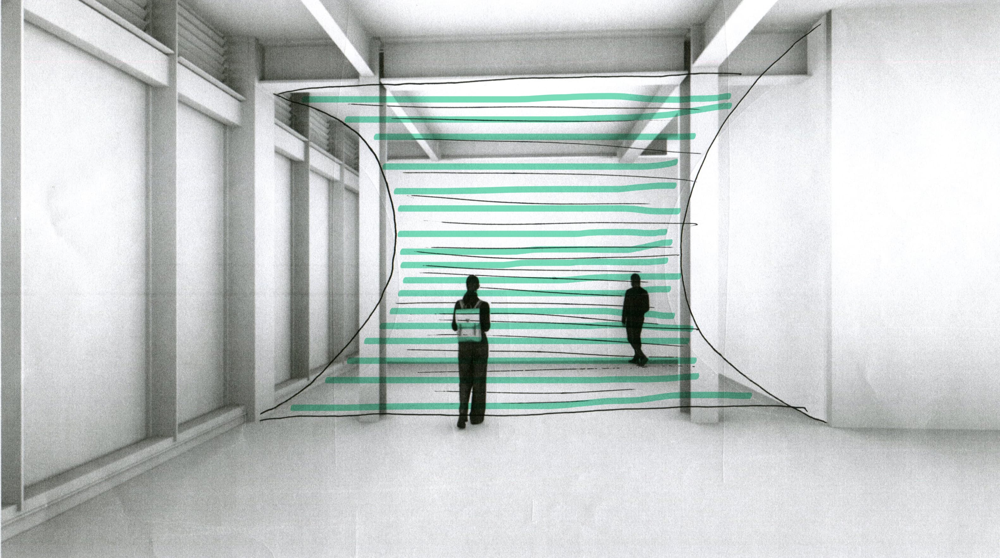
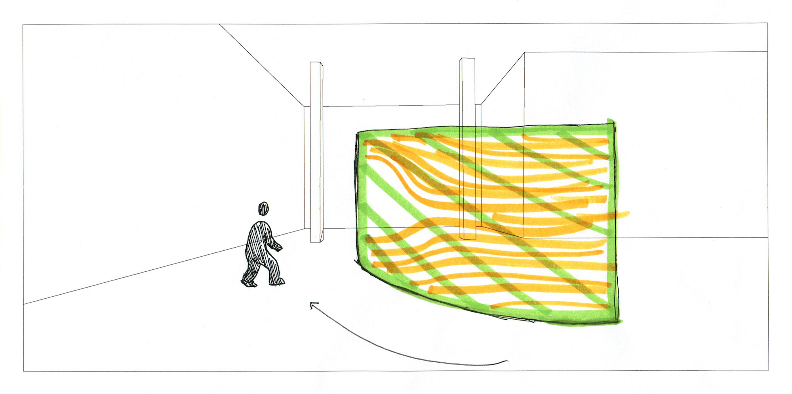
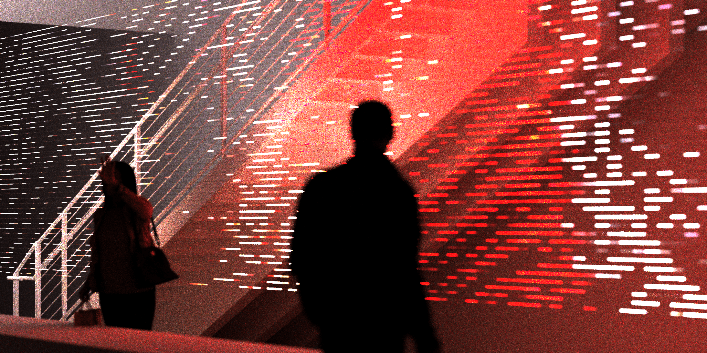
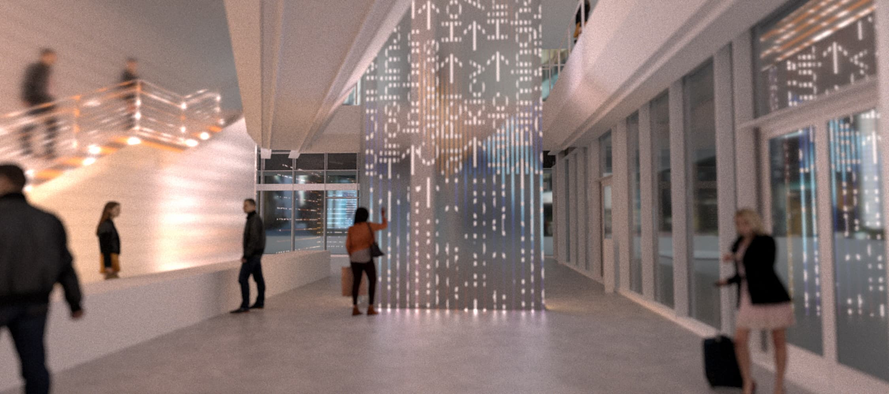
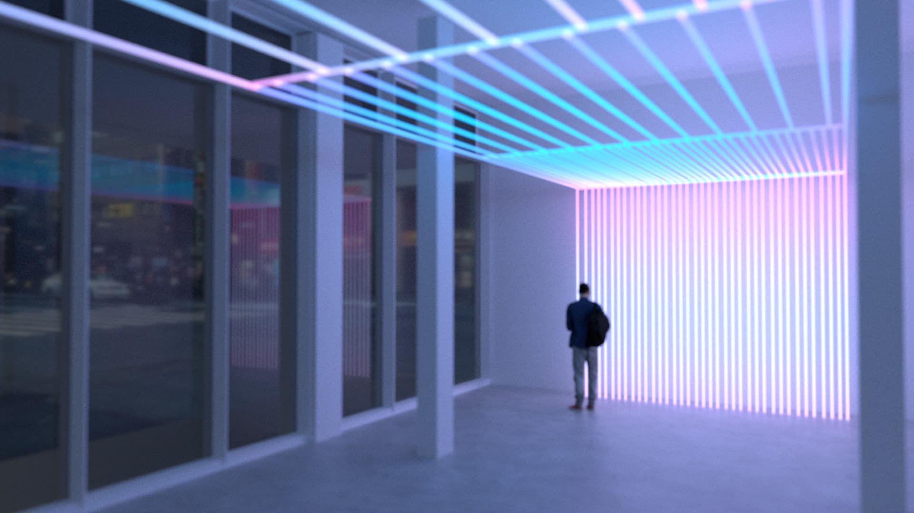
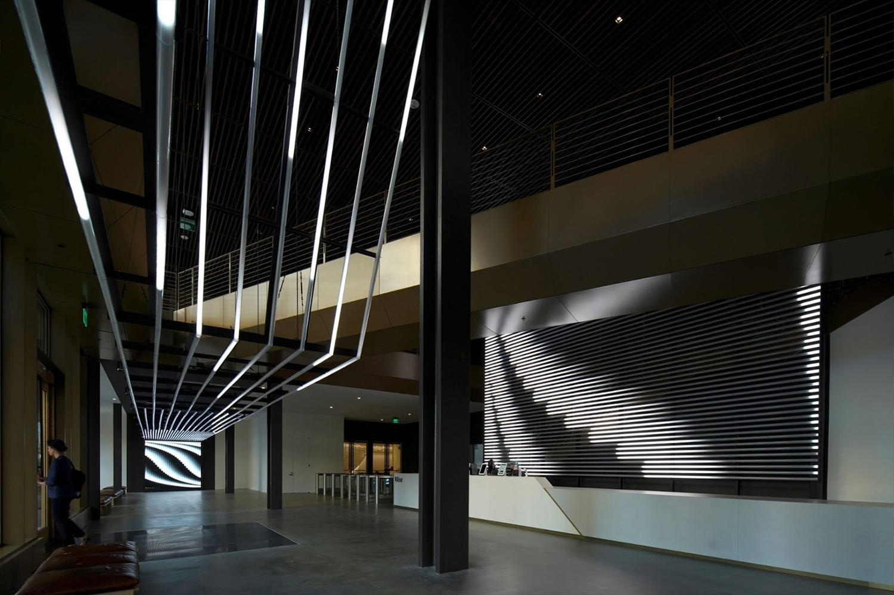

Uber Stream Lobby Experience
An interactive LED lobby installation for Uber's Mission Bay headquarters that tells the company's story through fluid, proximity-reactive content.

Background
Uber wanted to use its new global campus as a high-value setting to galvanize the company’s mission and culture, and help employees connect their contributions to positive, real-world impact.
Project Overview
I worked with HUSH Studios in Brooklyn, NY to create an interactive lobby experience in Uber’s new headquarters in Mission Bay, San Francisco. They wanted to take visitors on a journey into the scale and scope of Uber's story.
Uber's new Mission Bay headquarters features a large lobby space that was perfect for an experiential intervention. Uber wanted visitors and employees to be inspired by the brand's story and vision for the present and future of transit.

Zoom: Proximity-Based Storytelling
The first idea we floated to Uber involved a proximal experience. Visitors would be enticed to move deeper into the space since their movement directly affected the visual content within the activation.
Uber’s mission statement is to bring transportation for everyone, everywhere. We broke the story into three distinct parts to illustrate the vast and varied verticals, interactions, and opportunities that Uber facilitates.

Visitors are prompted to traverse the three stages of the Uber narrative. As they move closer, the story transforms from a global perspective to a regional view, all the way down to a personal driver-partner story.



Zone 1: Passive moments. The overall gesture within the space is taken in upon first entering the lobby. Content exists in the abstract, but a clear connection between architecture, technology, and storytelling is made evident.

Zone 2: Reactive moments. Proximity-based reaction creates a constant sense of motion: as individuals pass by areas of content, that content is pushed continuously throughout the space.

Zone 3: Approach. Moving forward in the space pushes content further out into the installations, revealing the next story. This reactive mode can only be seen when the space is empty and users enter for the first time.

Stream: A Coursing River
The second idea used fluidity as a visual metaphor to convey the complex network of movement, journeys, and pathways that Uber facilitates.

Visitors would walk toward the experience, trigger the interactive LED panels, and activate Uber’s content. Depending on where they stood, guests would access driver-partner stories, learn about Uber’s latest mobility projects, or view the constant stream of Uber’s data points spanning the globe.


The team felt this idea carried the most potential since water and fluidity could be conveyed in such varied ways. That, and the fact that the concept evoked the most movement, meant Stream was the idea Uber decided to go ahead with.
Using Uber's wealth of content, we began to experiment with the materials and digital manifestations that could be communicated within the lobby space.
Combining Concepts
Following reviews with Uber, the decision was to combine the best of the Zoom and Stream concepts to create a dynamic and fluid interactive experience.
Our architectural designers decided to cover the lobby space with LED-powered tubes. The tubes allowed text and image content to flow freely through the space in varying fidelities.

Though the LED tubes were rigid, we wanted the content within to behave like a fluid. Content would enter at one end of the lobby and travel to the other, beginning as loose particles that then coalesce to form text or images.
This composition created a compelling effect that translated well for both abstract moving patterns and higher-fidelity video.


Final Outcome
The Stream’s physical hardware and front-end visualization systems were designed for productization, modularity, and scalability. Following the deployment of The Stream in San Francisco, we scaled the work to Uber talent hubs in Dallas, Amsterdam, Chicago, and Mexico City.
This system allows operations teams at Uber’s headquarters to distribute and evolve core storytelling across offices in real time, encouraging a deep connection between global employees and the universal brand mission.

